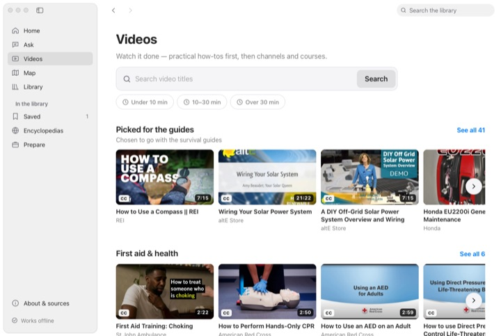
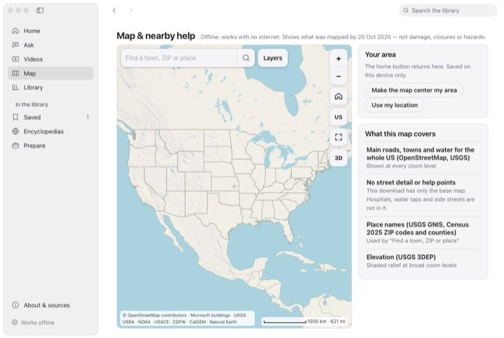
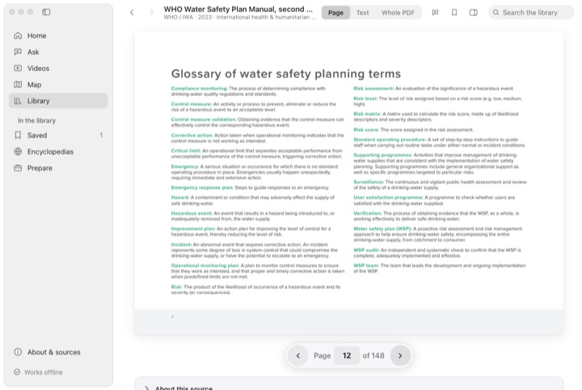
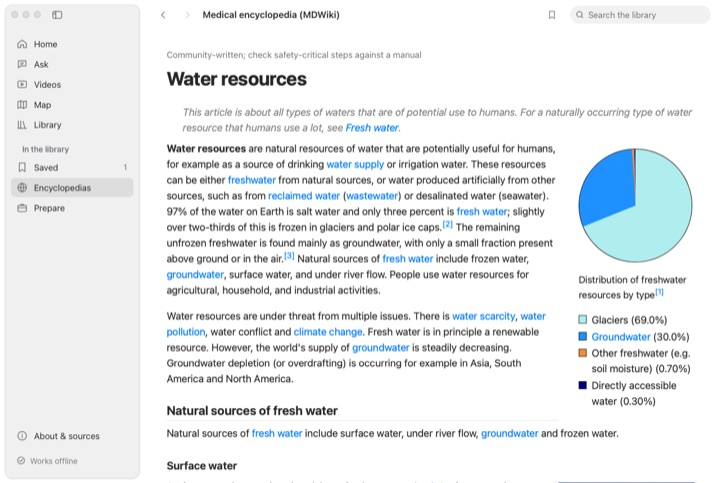

Set it up now, while you have internet and power. Then it’s ready when you need it.
What’s inside
The Small library, counted.
148books and manuals (PDF), 12,894 pages
45saved web guides
41how-to videos
2encyclopedias: MDWiki (medical) and Appropedia (how-to)
1map of the US: main roads, towns and water

Watch it done. Videos for first aid, water, power and repairs, with captions.

A map with no signal. Find a town or ZIP code. Main roads, towns and water.

Real manuals, page by page. From health, water, food and repair experts.

Encyclopedias, offline. Look things up when you can’t search the web.
Guides come from Hesperian Health Guides (Where There Is No Doctor), FEMA and Ready.gov, the World Health Organization, FAO, the American Red Cross, NOAA’s National Weather Service, Médecins Sans Frontières, the National Center for Home Food Preservation and ARRL, among others. See everyone whose work is in it
No internet. No account. No tracking.
It never uses the internet. Everything is on your computer, so it works with no signal at all.
It runs on a laptop battery. No power grid, no server, nothing to sign in to.
It’s free. No account, no ads, nothing to buy.
This site doesn’t track you either. No cookies, no analytics. Downloads come straight from our file storage.
How to open it
Lastbook 1.0 isn’t signed yet, so the first time you open it, your computer asks you to confirm. Here’s what to click. You only do this once.
Mac
For Apple Silicon Macs (M1 or newer) with macOS 14 Sonoma or newer.
Open Lastbook-1.0.0-mac.dmg.
Drag Lastbook to Applications. Then eject the Lastbook disk in the Finder sidebar.
Leave Lastbook-Small.zip in Downloads and double-click it. Wait until it finishes. It makes a folder called LastbookData. Leave it there. If you already see a LastbookData folder in Downloads, leave it there and skip this step.
Open Lastbook from Applications.
The first time, macOS warns that it can’t check Lastbook. That is expected. Don’t click Move to Trash.
macOS 15 Sequoia or newer
Click Done.
Open System Settings > Privacy & Security.
Scroll down to Security. Next to the line that says Lastbook was blocked, click Open Anyway.
When asked, click Open Anyway (or Open), and use Touch ID or your Mac password.
If the button is gone, open Lastbook again and come back within an hour.
macOS 14 Sonoma
Click Cancel.
Open Applications in the Finder.
Control-click Lastbook. Choose Open.
Click Open.
You only do this once.
If your Mac asks to let Lastbook use your Downloads or Documents folder, click Allow. That is how it finds the library.
Windows
For Windows 10 or 11, 64-bit.
Right-click Lastbook-Small.zip in Downloads and choose Extract All.
Click Extract. Keep the folder it suggests. Wait until it finishes, which can take several minutes.
Double-click Lastbook-1.0.0-Setup.exe in Downloads.
If Windows protected your PC appears, click More info, then Run anyway.
Click Install, then Open Lastbook.
Next time, open Lastbook from the Start menu.
Windows 11 only: Smart App Control may block Lastbook, because it isn’t signed yet. There is no way to allow just one app.
If Windows says Smart App Control blocked Lastbook, open Windows Security > App & browser control > Smart App Control settings and choose Off. On an up-to-date Windows 11 you can turn it back on later. A signed version that doesn’t need this is coming.
Why the warning?
Apple and Microsoft expect app makers to register a digital signature. Lastbook doesn’t have one yet, so your computer shows a warning. A signed version comes later.
Lastbook never uses the internet.
If Lastbook can’t find the library
It asks you. Choose the LastbookData folder. It is in Downloads, or on Windows in Downloads > Lastbook-Small.
Check your download (optional)
You can skip this. It proves the file you got is exactly the one we made. SHA-256 of each file: